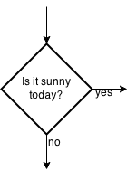

Tools for organizing problems
- Problem analysis chart
- Interactivity or structure chart
- IPO chart
- Algorithms
- Flowcharts
- Internal and External Documentation
1. Problem analysis chart
Contains four parts: given data, required results, processing, and list of solution alternatives. It comes in the form of a chart:
| Given data | Required Results |
|---|---|
| ... | ... |
| Processing | List of solution alternatives |
| ... |
|
For example
| Given data | Required Results |
|---|---|
|
pi radius |
Area of the circle |
| Processing | List of solution alternatives |
| Area = pi * radius * radius |
|
2. Interactivity or structure chart
This organizes the problem into sub-tasks. It often looks like an organizational chart or web diagram.

For example

3. IPO chart
IPO stands for Input/Processing/Output. It contains 4 columns: input, processing, module reference, and output. It looks like a chart.
| Input | Processing | Module references | Output |
|---|---|---|---|
| All known data from PAC (problem analysis chart) | All processes that are required | Module number where it takes place | Result |
For example
| Input | Processing | Module references | Output |
|---|---|---|---|
|
radius pi |
Enter Radius Get pi value & calculate area Display Area |
1000 2000 3000 |
area |
4. Algorithms
An algorithm is a set of step-by-step instructions. It is sometimes called Pseudocode. It is the key component to solving any problem. You cannot assume anything, cannot skip steps, it must be executable one step at a time, and it must be complete.
Typical algorithm structure
Control module (name of module)
- instruction
- instruction
- instruction
- ...
- ...
- exit
Example algorithm
Area of circle control module (0000)
- Process read
- Process calculate
- Process display
- exit
Read module (1000)
- Read radius
- exit
Calculate module (2000)
- area = pi * radius * radius
- exit
Display module (3000)
- Print area
- exit
5. Flowchart
Programmers use algorithms to create flowcharts. Flowcharts are graphic representations of the algorithms. Flowcharts have symbols to represent parts of the program. Often flowcharts will show errors that may not been seen easily in other organizing charts.

Example Flowcharts

6. Internal and external documentation
Internal documentation — are notes written inside the program for other programmers to read. It lets them know what parts of the program are doing.
External documentation — usually consists of the user manuals for your program so the end user can fully understand how to install and use your program.
Saving your work
Download the assignment template for you to fill in. Rename the document using your last name in your Computer Programming 12 directory.
The assignment
The problem: Use the 5 problem solving organizational tools to outline a solution to the following problem:
Calculate the weekly gross pay for an employee based on their hourly pay rate, hours worked, and number of overtime hours.
From the Government of Nova Scotia Employment Rights website:
The general rule for overtime is that employees are entitled to receive 1 1/2 times their regular wage for each hour worked after 48 in a week. A week is defined as a consistent seven day period, e.g., Monday to Sunday, Wednesday to Tuesday. For example, if an employee makes $14.00 per hour, that employee would make $21.00 per hour for every hour worked over 48 hours.
Suggestions
Use draw.io and create your charts
- You should create the organizational chart as
1.08H-OrganizingProblems-OrgChart-LastName, and then export it as a.png - You should create the flowchart as
1.08H-OrganizingProblems-FlowChart-LastName, and then export it as a.png - You will have to change the image filenames in the assignment template to match your images.
- Follow the examples to help you.
-
You will need to use a decision symbol in your flowchart:

When you are done, hand in all three files (html and both chart images) into the I:/ PassIn folder.
Evaluation
- ___/2 — Outcome 1.2 - apply mathematical concepts, including boolean logic, operators
- ___/2 — Outcome 1.3 - define a problem in explicit terms using object-oriented analysis
- ___/2 — Outcome 1.4 - identify and outline strategies to solve a problem
- ___/2 — Outcome 1.5 - apply a range of problem solving skills
- ___/2 — Quality of HTML code